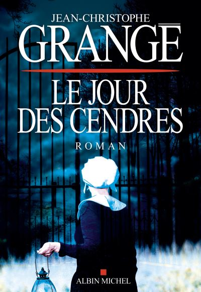
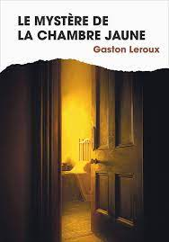
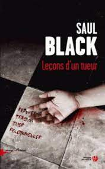
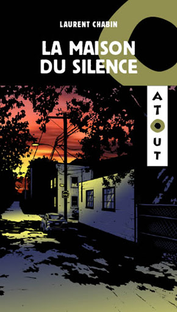
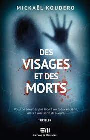

Blog de lecture
Lire c'est vivre dans un autre univers
“Le meurtre parfait est de pousser l'autre au suicide...”
Nathalie Delourme
-

Le jour des cendres
Jean Christophe Grangé
Dans un monde de pure innocence, quel peut être le mobile d'un tueur ? Dans une communauté sans péché, comment le sang peut-il couler ? À moins qu'à l'inverse... Le coupable soit le seul innocent de la communauté.
-

Le chant de l'assassin
Roger Jon Ellory
Condamné pour meurtre, derrière les barreaux depuis plus de vingt ans, Evan Riggs n'a jamais connu sa fille, Sarah, confiée dès sa naissance à une famille adoptive. Le jour où son compagnon de cellule, Henry Quinn, un jeune musicien, sort de prison, il lui demande de la retrouver pour lui donner une lettre.Lorsqu'Henry arrive à Calvary, au Texas, le frère de Riggs, shérif de la ville, lui affirme que la jeune femme a quitté la région depuis longtemps, et que personne ne sait ce qu'elle est devenue. Mais Henry s'entête. Il a fait une promesse, il ira jusqu'au bout.
-

Le mystère de La Chambre Jaune
Gaston Leroux
La porte de la chambre fermée à clef « de l'intérieur », les volets de l'unique fenêtre fermés, eux aussi, « de l'intérieur », pas de cheminée... Qui a tenté de tuer Mlle Stangerson et, surtout, par où l'assassin a-t-il pu quitter la chambre jaune ? C'est le jeune reporter Rouletabille, limier surdoué et raisonnant par « le bon bout de la raison, ce bon bout que l'on reconnait à ce que rien ne peut le faire craquer », qui va trouver la solution de cet affolant problème, au terme d'une enquête fertile en aventures et en rebondissements.
-

Leçons d'un tueur
Saul Black
Katrina, Sarah, Angelica, Shyla, Yun-seo, Leah, Lisbeth... Sept femmes âgées de vingt-quatre à quarante ans. Sept femmes retrouvées mortes aux quatre coins des Etats-Unis. Violées, torturées, exécutées. L'oeuvre d'un homme ou de plusieurs ? Depuis trois ans, la police tourne en rond et n'a pour indices que d'étranges objets découverts dans les corps mutilés des victimes.Aujourd'hui, l'inspectrice à la Criminelle de San Francisco, Valerie Hart, sent qu'elle tient enfin une piste sérieuse.
-

La Maison du Silence
Laurent Chabin
Patricia, Thomas et Julien sont trois jeunes, qui ensemble vont traverser une drôle d’aventure. Un matin, les trois amis sont au parc et ils s’amusent bien jusqu’à ce que Diego arrive avec ses deux sœurs plus jeunes Louise et Charlotte. Cette famille est assez étrange , car depuis que leur mère est partie, il se passe des choses très bizarres chez eux. Patricia, Thomas et Julien veulent comprendre pourquoi ces enfants ont l’air si triste et pourquoi se cachent-ils, pourquoi ils ne parlent à personne de ce qu’il se passe. Les trois détectives veulent en avoir le coeur net et mettre fin à l’histoire étrange de la maison de la rue reculée…
-

Des visages et des morts
Mickaël Koudero
En France, à Lyon, un homme est assassiné dans une église. Son dos a été tailladé, sa langue, coupée. À sept cents kilomètres de distance, sa fiancée est retrouvée pendue à un arbre. Un meurtre maquillé en suicide. Très vite, le sang se répand jusqu’en Belgique. Dans un asile abandonné, on découvre le cadavre d’une femme entièrement nue, le visage arraché. Une folie sans nom. Les meurtres s’enchaînent, et tous portent la signature d’un tueur en série libéré un an plus tôt, le Borgne. L’homme aurait-il repris du service ? Difficile à croire vu son âge avancé et son état de santé.